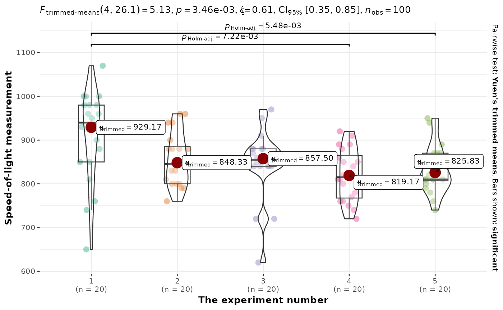
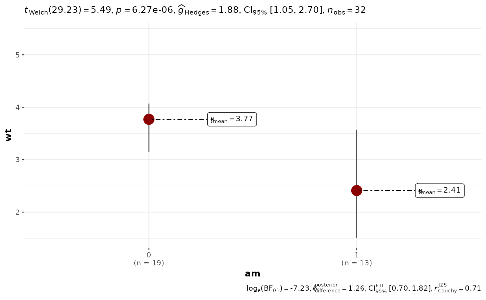

A combination of box and violin plots along with jittered data points for between-subjects designs with statistical details included in the plot as a subtitle.
Usage
ggbetweenstats(
data,
x,
y,
type = "parametric",
pairwise.display = "significant",
p.adjust.method = "holm",
effsize.type = "unbiased",
bf.prior = 0.707,
bf.message = TRUE,
results.subtitle = TRUE,
xlab = NULL,
ylab = NULL,
caption = NULL,
title = NULL,
subtitle = NULL,
digits = 2L,
var.equal = FALSE,
conf.level = 0.95,
nboot = 100L,
tr = 0.2,
centrality.plotting = TRUE,
centrality.type = type,
centrality.point.args = list(size = 5, color = "darkred"),
centrality.label.args = list(size = 3, nudge_x = 0.4, segment.linetype = 4,
min.segment.length = 0),
point.args = list(position = ggplot2::position_jitterdodge(dodge.width = 0.6), alpha =
0.4, size = 3, stroke = 0, na.rm = TRUE),
boxplot.args = list(width = 0.3, alpha = 0.2, na.rm = TRUE),
violin.args = list(width = 0.5, alpha = 0.2, na.rm = TRUE),
ggsignif.args = list(textsize = 3, tip_length = 0.01, na.rm = TRUE),
ggtheme = ggstatsplot::theme_ggstatsplot(),
package = "RColorBrewer",
palette = "Dark2",
ggplot.component = NULL,
...
)Arguments
- data
A data frame (or a tibble) from which variables specified are to be taken. Other data types (e.g., matrix,table, array, etc.) will not be accepted. Additionally, grouped data frames from
{dplyr}should be ungrouped before they are entered asdata.- x
The grouping (or independent) variable from
data. In case of a repeated measures or within-subjects design, ifsubject.idargument is not available or not explicitly specified, the function assumes that the data has already been sorted by such an id by the user and creates an internal identifier. So if your data is not sorted, the results can be inaccurate when there are more than two levels inxand there areNAs present. The data is expected to be sorted by user in subject-1, subject-2, ..., pattern.- y
The response (or outcome or dependent) variable from
data.- type
A character specifying the type of statistical approach:
"parametric""nonparametric""robust""bayes"
You can specify just the initial letter.
- pairwise.display
Decides which pairwise comparisons to display. Available options are:
"significant"(abbreviation accepted:"s")"non-significant"(abbreviation accepted:"ns")"all"
You can use this argument to make sure that your plot is not uber-cluttered when you have multiple groups being compared and scores of pairwise comparisons being displayed. If set to
"none", no pairwise comparisons will be displayed.- p.adjust.method
Adjustment method for p-values for multiple comparisons. Possible methods are:
"holm"(default),"hochberg","hommel","bonferroni","BH","BY","fdr","none".- effsize.type
Type of effect size needed for parametric tests. The argument can be
"eta"(partial eta-squared) or"omega"(partial omega-squared).- bf.prior
A number between
0.5and2(default0.707), the prior width to use in calculating Bayes factors and posterior estimates. In addition to numeric arguments, several named values are also recognized:"medium","wide", and"ultrawide", corresponding to r scale values of1/2,sqrt(2)/2, and1, respectively. In case of an ANOVA, this value corresponds to scale for fixed effects.- bf.message
Logical that decides whether to display Bayes Factor in favor of the null hypothesis. This argument is relevant only for parametric test (Default:
TRUE).- results.subtitle
Decides whether the results of statistical tests are to be displayed as a subtitle (Default:
TRUE). If set toFALSE, only the plot will be returned.- xlab
Label for
xaxis variable. IfNULL(default), variable name forxwill be used.- ylab
Labels for
yaxis variable. IfNULL(default), variable name forywill be used.- caption
The text for the plot caption. This argument is relevant only if
bf.message = FALSE.- title
The text for the plot title.
- subtitle
The text for the plot subtitle. Will work only if
results.subtitle = FALSE.- digits
Number of digits for rounding or significant figures. May also be
"signif"to return significant figures or"scientific"to return scientific notation. Control the number of digits by adding the value as suffix, e.g.digits = "scientific4"to have scientific notation with 4 decimal places, ordigits = "signif5"for 5 significant figures (see alsosignif()).- var.equal
a logical variable indicating whether to treat the two variances as being equal. If
TRUEthen the pooled variance is used to estimate the variance otherwise the Welch (or Satterthwaite) approximation to the degrees of freedom is used.- conf.level
Scalar between
0and1(default:95%confidence/credible intervals,0.95). IfNULL, no confidence intervals will be computed.- nboot
Number of bootstrap samples for computing confidence interval for the effect size (Default:
100L).- tr
Trim level for the mean when carrying out
robusttests. In case of an error, try reducing the value oftr, which is by default set to0.2. Lowering the value might help.- centrality.plotting
Logical that decides whether centrality tendency measure is to be displayed as a point with a label (Default:
TRUE). Function decides which central tendency measure to show depending on thetypeargument.mean for parametric statistics
median for non-parametric statistics
trimmed mean for robust statistics
MAP estimator for Bayesian statistics
If you want default centrality parameter, you can specify this using
centrality.typeargument.- centrality.type
Decides which centrality parameter is to be displayed. The default is to choose the same as
typeargument. You can specify this to be:"parameteric"(for mean)"nonparametric"(for median)robust(for trimmed mean)bayes(for MAP estimator)
Just as
typeargument, abbreviations are also accepted.- centrality.point.args, centrality.label.args
A list of additional aesthetic arguments to be passed to
ggplot2::geom_point()andggrepel::geom_label_repel()geoms, which are involved in mean plotting.- point.args
A list of additional aesthetic arguments to be passed to the
ggplot2::geom_point().- boxplot.args
A list of additional aesthetic arguments passed on to
ggplot2::geom_boxplot().- violin.args
A list of additional aesthetic arguments to be passed to the
ggplot2::geom_violin().- ggsignif.args
A list of additional aesthetic arguments to be passed to
ggsignif::geom_signif().- ggtheme
A
{ggplot2}theme. Default value istheme_ggstatsplot(). Any of the{ggplot2}themes (e.g.,ggplot2::theme_bw()), or themes from extension packages are allowed (e.g.,ggthemes::theme_fivethirtyeight(),hrbrthemes::theme_ipsum_ps(), etc.). But note that sometimes these themes will remove some of the details that{ggstatsplot}plots typically contains. For example, if relevant,ggbetweenstats()shows details about multiple comparison test as a label on the secondary Y-axis. Some themes (e.g.ggthemes::theme_fivethirtyeight()) will remove the secondary Y-axis and thus the details as well.- package, palette
Name of the package from which the given palette is to be extracted. The available palettes and packages can be checked by running
View(paletteer::palettes_d_names).- ggplot.component
A
ggplotcomponent to be added to the plot prepared by{ggstatsplot}. This argument is primarily helpful forgrouped_variants of all primary functions. Default isNULL. The argument should be entered as a{ggplot2}function or a list of{ggplot2}functions.- ...
Currently ignored.
Details
For details, see: https://indrajeetpatil.github.io/ggstatsplot/articles/web_only/ggbetweenstats.html
Summary of graphics
| graphical element | geom used | argument for further modification |
| raw data | ggplot2::geom_point() | point.args |
| box plot | ggplot2::geom_boxplot() | boxplot.args |
| density plot | ggplot2::geom_violin() | violin.args |
| centrality measure point | ggplot2::geom_point() | centrality.point.args |
| centrality measure label | ggrepel::geom_label_repel() | centrality.label.args |
| pairwise comparisons | ggsignif::geom_signif() | ggsignif.args |
Centrality measures
The table below provides summary about:
statistical test carried out for inferential statistics
type of effect size estimate and a measure of uncertainty for this estimate
functions used internally to compute these details
| Type | Measure | Function used |
| Parametric | mean | datawizard::describe_distribution() |
| Non-parametric | median | datawizard::describe_distribution() |
| Robust | trimmed mean | datawizard::describe_distribution() |
| Bayesian | MAP | datawizard::describe_distribution() |
Two-sample tests
The table below provides summary about:
statistical test carried out for inferential statistics
type of effect size estimate and a measure of uncertainty for this estimate
functions used internally to compute these details
between-subjects
Hypothesis testing
| Type | No. of groups | Test | Function used |
| Parametric | 2 | Student's or Welch's t-test | stats::t.test() |
| Non-parametric | 2 | Mann-Whitney U test | stats::wilcox.test() |
| Robust | 2 | Yuen's test for trimmed means | WRS2::yuen() |
| Bayesian | 2 | Student's t-test | BayesFactor::ttestBF() |
Effect size estimation
| Type | No. of groups | Effect size | CI available? | Function used |
| Parametric | 2 | Cohen's d, Hedge's g | Yes | effectsize::cohens_d(), effectsize::hedges_g() |
| Non-parametric | 2 | r (rank-biserial correlation) | Yes | effectsize::rank_biserial() |
| Robust | 2 | Algina-Keselman-Penfield robust standardized difference | Yes | WRS2::akp.effect() |
| Bayesian | 2 | difference | Yes | bayestestR::describe_posterior() |
within-subjects
Hypothesis testing
| Type | No. of groups | Test | Function used |
| Parametric | 2 | Student's t-test | stats::t.test() |
| Non-parametric | 2 | Wilcoxon signed-rank test | stats::wilcox.test() |
| Robust | 2 | Yuen's test on trimmed means for dependent samples | WRS2::yuend() |
| Bayesian | 2 | Student's t-test | BayesFactor::ttestBF() |
Effect size estimation
| Type | No. of groups | Effect size | CI available? | Function used |
| Parametric | 2 | Cohen's d, Hedge's g | Yes | effectsize::cohens_d(), effectsize::hedges_g() |
| Non-parametric | 2 | r (rank-biserial correlation) | Yes | effectsize::rank_biserial() |
| Robust | 2 | Algina-Keselman-Penfield robust standardized difference | Yes | WRS2::wmcpAKP() |
| Bayesian | 2 | difference | Yes | bayestestR::describe_posterior() |
One-way ANOVA
The table below provides summary about:
statistical test carried out for inferential statistics
type of effect size estimate and a measure of uncertainty for this estimate
functions used internally to compute these details
between-subjects
Hypothesis testing
| Type | No. of groups | Test | Function used |
| Parametric | > 2 | Fisher's or Welch's one-way ANOVA | stats::oneway.test() |
| Non-parametric | > 2 | Kruskal-Wallis one-way ANOVA | stats::kruskal.test() |
| Robust | > 2 | Heteroscedastic one-way ANOVA for trimmed means | WRS2::t1way() |
| Bayes Factor | > 2 | Fisher's ANOVA | BayesFactor::anovaBF() |
Effect size estimation
| Type | No. of groups | Effect size | CI available? | Function used |
| Parametric | > 2 | partial eta-squared, partial omega-squared | Yes | effectsize::omega_squared(), effectsize::eta_squared() |
| Non-parametric | > 2 | rank epsilon squared | Yes | effectsize::rank_epsilon_squared() |
| Robust | > 2 | Explanatory measure of effect size | Yes | WRS2::t1way() |
| Bayes Factor | > 2 | Bayesian R-squared | Yes | performance::r2_bayes() |
within-subjects
Hypothesis testing
| Type | No. of groups | Test | Function used |
| Parametric | > 2 | One-way repeated measures ANOVA | afex::aov_ez() |
| Non-parametric | > 2 | Friedman rank sum test | stats::friedman.test() |
| Robust | > 2 | Heteroscedastic one-way repeated measures ANOVA for trimmed means | WRS2::rmanova() |
| Bayes Factor | > 2 | One-way repeated measures ANOVA | BayesFactor::anovaBF() |
Effect size estimation
| Type | No. of groups | Effect size | CI available? | Function used |
| Parametric | > 2 | partial eta-squared, partial omega-squared | Yes | effectsize::omega_squared(), effectsize::eta_squared() |
| Non-parametric | > 2 | Kendall's coefficient of concordance | Yes | effectsize::kendalls_w() |
| Robust | > 2 | Algina-Keselman-Penfield robust standardized difference average | Yes | WRS2::wmcpAKP() |
| Bayes Factor | > 2 | Bayesian R-squared | Yes | performance::r2_bayes() |
Pairwise comparison tests
The table below provides summary about:
statistical test carried out for inferential statistics
type of effect size estimate and a measure of uncertainty for this estimate
functions used internally to compute these details
between-subjects
Hypothesis testing
| Type | Equal variance? | Test | p-value adjustment? | Function used |
| Parametric | No | Games-Howell test | Yes | PMCMRplus::gamesHowellTest() |
| Parametric | Yes | Student's t-test | Yes | stats::pairwise.t.test() |
| Non-parametric | No | Dunn test | Yes | PMCMRplus::kwAllPairsDunnTest() |
| Robust | No | Yuen's trimmed means test | Yes | WRS2::lincon() |
| Bayesian | NA | Student's t-test | NA | BayesFactor::ttestBF() |
Effect size estimation
Not supported.
within-subjects
Hypothesis testing
| Type | Test | p-value adjustment? | Function used |
| Parametric | Student's t-test | Yes | stats::pairwise.t.test() |
| Non-parametric | Durbin-Conover test | Yes | PMCMRplus::durbinAllPairsTest() |
| Robust | Yuen's trimmed means test | Yes | WRS2::rmmcp() |
| Bayesian | Student's t-test | NA | BayesFactor::ttestBF() |
Effect size estimation
Not supported.
Examples
# for reproducibility
set.seed(123)
p <- ggbetweenstats(mtcars, am, mpg)
p
# extracting details from statistical tests
extract_stats(p)
#> $subtitle_data
#> # A tibble: 1 × 18
#> parameter1 parameter2 mean.parameter1 mean.parameter2 statistic df.error
#> <chr> <chr> <dbl> <dbl> <dbl> <dbl>
#> 1 mpg am 17.1 24.4 -3.77 18.3
#> p.value method alternative effectsize estimate conf.level
#> <dbl> <chr> <chr> <chr> <dbl> <dbl>
#> 1 0.00137 Welch Two Sample t-test two.sided Hedges' g -1.35 0.95
#> conf.low conf.high conf.method conf.distribution n.obs expression
#> <dbl> <dbl> <chr> <chr> <int> <list>
#> 1 -2.17 -0.512 ncp t 32 <language>
#>
#> $caption_data
#> # A tibble: 1 × 16
#> term effectsize estimate conf.level conf.low conf.high pd
#> <chr> <chr> <dbl> <dbl> <dbl> <dbl> <dbl>
#> 1 Difference Bayesian t-test -6.44 0.95 -10.1 -2.74 0.999
#> prior.distribution prior.location prior.scale bf10 method
#> <chr> <dbl> <dbl> <dbl> <chr>
#> 1 cauchy 0 0.707 86.6 Bayesian t-test
#> conf.method log_e_bf10 n.obs expression
#> <chr> <dbl> <int> <list>
#> 1 ETI 4.46 32 <language>
#>
#> $pairwise_comparisons_data
#> NULL
#>
#> $descriptive_data
#> NULL
#>
#> $one_sample_data
#> NULL
#>
#> $tidy_data
#> NULL
#>
#> $glance_data
#> NULL
#>
#> attr(,"class")
#> [1] "ggstatsplot_stats" "list"
# modifying defaults
ggbetweenstats(
morley,
x = Expt,
y = Speed,
type = "robust",
xlab = "The experiment number",
ylab = "Speed-of-light measurement"
)

# you can remove a specific geom to reduce complexity of the plot
ggbetweenstats(
mtcars,
am,
wt,
# to remove violin plot
violin.args = list(width = 0, linewidth = 0, colour = NA),
# to remove boxplot
boxplot.args = list(width = 0),
# to remove points
point.args = list(alpha = 0)
)
